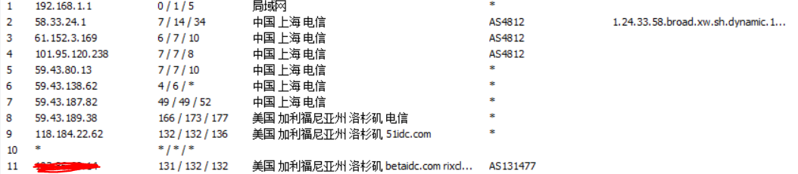
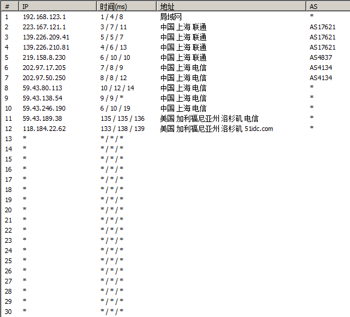
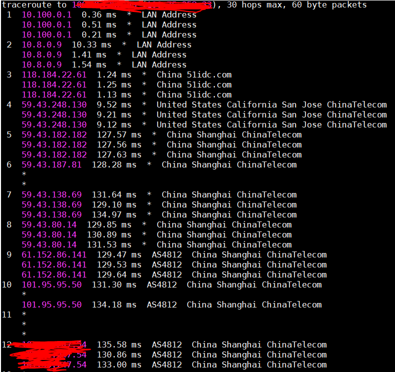
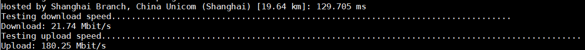
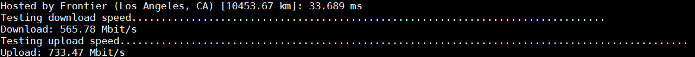
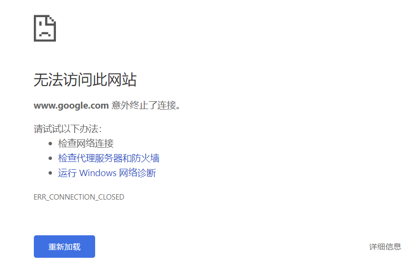

RFCHOST的GIA线路评测及搭建v2ray的曲折历程
Create At: 2018-12-10 00:00:00注：该文章写于2018年12月，信息未必能够反映现今状况。
一、事起
之前买的搬瓦工GIA线路，其实用的还行，就是不知道为啥播spotify有点卡。照说youtube都不卡spotify实在是没理由卡。那就顺便看看新的选择吧，看到网上RFCHOST风评不错，那就试试看吧。
他家GIA线路是月付8.99 USD，但是选季付及以上都是7.99 USD每月，竟然没有优惠。这个价格和搬瓦工，甚至和阿里云国际比确实是没啥竞争力。
付款暂时不支持信用卡，只能用支付宝。有点蛋疼。
二、评测
在周末的晚上和白天分别测了一次，结果比较稳定。
2.1 上海电信Traceroute
可以看到是CN2的线路。
2.2 上海联通Traceroute
也是直接走的电信出口。
2.3 回程Traceroute到上海BGP
2.4 带宽
周末白天的情况比较好。
这台机器的ip估计是从上海广播的，speedtest直接识别为上海的ip了，给匹配了个上海的测速点：
强行指定为洛杉矶的测速点之后：
三、在该机器上安装v2ray遇到的坑
3.1 默认不配置SSH
他们家的机器可能都是默认不配置SSH的。只能从官网进VNC安装SSH。 要注意他们是开始SELinux的，所以如果直接制定非22端口的SSH连接的话会显示permission denied，不能绑定：
Dec 09 01:16:33 RFCHOST-181208-FF9V sshd[16197]: error: Bind to port 1025 on 0.0.0.0 failed: Permission denied.
Dec 09 01:16:33 RFCHOST-181208-FF9V sshd[16197]: error: Bind to port 1025 on :: failed: Permission denied.所以先要去把SELinux的SSH端口号改了。安装一下SEManage
yum install policycoreutils-python然后改SSH端口：
semanage port -a -t ssh_port_t -p tcp 12343.2 系统时钟不同步
这个坑真的是神坑。v2ray对于客户端和服务端的时间差不得超过90秒，我在配置完成v2ray之后，之前另外一台服务器上用的好好的同一个配置文件，这台服务器不行。chrome打开直接显示:
无法访问此网站 www.google.com 意外终止了连接。原本以为是防火墙的原因没开端口。直接清空iptables，stop firewalld，仍然不行。
使用nmap查看端口状态，也是显示为open，十分蛋疼。
突然想到之前帮别人配置过一次遇到过类似的问题。date -R查看系统时间，果然错了。改完修复了。
3.3 默认同时开启iptables和firewalld
我是知道centos 7是默认开始firewalld的，但是没想到这台机器同时开启了iptables和firewalld...第一次配置的时候是没发现这个问题，直到nmap扫描端口是filtered的才发觉到。直接禁用firewalld：
service firewalld stop
systemctl disable firewalld.service